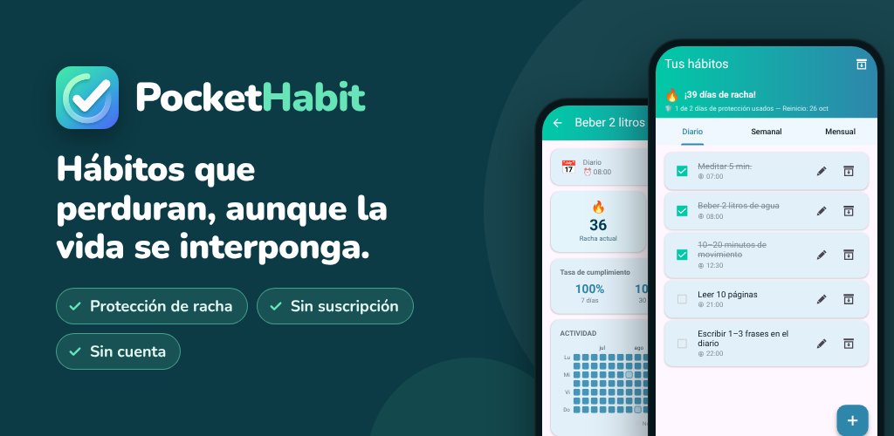

PocketHabit: Hábitos y rutinas
Tracker de hábitos con protección de racha: hábitos duraderos y sin suscripción.
Google Play¿Quieres crear mejores hábitos, pero la vida siempre se interpone? PocketHabit es el tracker de hábitos que te da margen para ser humano.
PENSADO PARA PRINCIPIANTES
Sin configuraciones complicadas. Sin cuenta. Sin suscripción. Abre la app, añade tu primer hábito y empieza. Una breve introducción te deja listo en menos de un minuto.
ASÍ FUNCIONA
- Añade tus primeros hábitos o elige entre las sugerencias de la introducción
- Márcalos con un solo toque
- Mira cómo crece tu racha: la protección de racha cubre los días que no salen según lo previsto
NADIE ES PERFECTO
La exclusiva protección de racha de PocketHabit entiende que el cambio real lleva tiempo. Si te saltas un día, tu racha no se rompe al instante: tienes un margen que te ayuda a retomar el rumbo. Tú decides lo estricto que quieres ser:
- Principiante: se permiten 2 días perdidos por semana
- Fácil: 1 día perdido por semana
- Normal: 1 día perdido cada 14 días
- Difícil: 1 día perdido por mes
Avanza a tu ritmo y, cuando estés listo, sube la dificultad.
TODOS TUS HÁBITOS EN UNA APP
Ya sean rutinas diarias, tareas semanales o metas mensuales, PocketHabit se encarga de todo:
- Diario: rutina matutina, ejercicio, beber agua
- Semanal: elige días concretos de la semana
- Mensual: una fecha fija o, por ejemplo, «cada 2.º lunes del mes»
RECORDATORIOS QUE SE ADAPTAN A TI
En lugar de configurar un recordatorio para cada hábito, activa un único recordatorio diario global. Abre la app y marca todo de una vez. Así de sencilla puede ser una rutina. ¿Prefieres horas individuales? Cada hábito también puede tener su propio recordatorio.
TU APP, TU ESTILO
Elige entre varios temas de color y cambia entre el modo oscuro y el modo claro. Una app que te gusta abrir cada día te ayuda a ser constante.
ESTADÍSTICAS QUE MOTIVAN
Ve de un vistazo cómo te ha ido esta semana y este mes. La vista de detalle muestra un mapa de calor de tus hábitos completados, tu tasa de cumplimiento y tu mejor racha personal.
- Calendario mensual: cada día se colorea según cuánto lograste
- Resumen por día de la semana: descubre qué días te van mejor
- Tasas de cumplimiento de los últimos 7, 30 y 90 días
LOGROS QUE TE MOTIVAN
30 logros premian tu progreso: tu primera racha de 7 días, semanas y meses perfectos e incluso tu regreso después de una pausa.
TU DOSIS DIARIA DE MOTIVACIÓN
Cada día empieza con una hoja nueva de tu calendario de taco: una de 240 frases breves que te ayudan a seguir adelante.
TUS DATOS, BAJO TU CONTROL
- Exporta tus hábitos como copia de seguridad y restáuralos en un teléfono nuevo
- Pausa hábitos en el archivo: sus estadísticas se conservan
¿PARA QUIÉN ES ESTE TRACKER DE HÁBITOS?
Para cualquiera que quiera empezar poco a poco y ser constante: beber más agua, leer cada noche, entrenar tres veces por semana o mantener la casa ordenada. Sobre todo si alguna vez una app de hábitos demasiado estricta te hizo abandonar por un solo día perdido.
PREMIUM: PAGA UNA VEZ, DISFRUTA PARA SIEMPRE
Sin suscripción. Sin cuotas mensuales. Mejora una vez y disfruta para siempre:
- Totalmente sin publicidad
- Acceso a todos los temas
- Historial de estadísticas de más de 2 años (en lugar de 6 meses)
- Protección de racha sin ver anuncios
- Todas las futuras funciones Premium incluidas
CREADA CON LOS USUARIOS, PARA LOS USUARIOS
PocketHabit crece contigo. Solo se desarrollan nuevas funciones cuando los usuarios reales de verdad las quieren. Tu opinión importa: escríbenos y ayuda a mejorar la app.
Privacidad: todos los datos de tus hábitos se quedan en tu dispositivo. No necesitas cuenta.
Descárgala ahora y da el primer paso hacia la mejor versión de ti mismo.